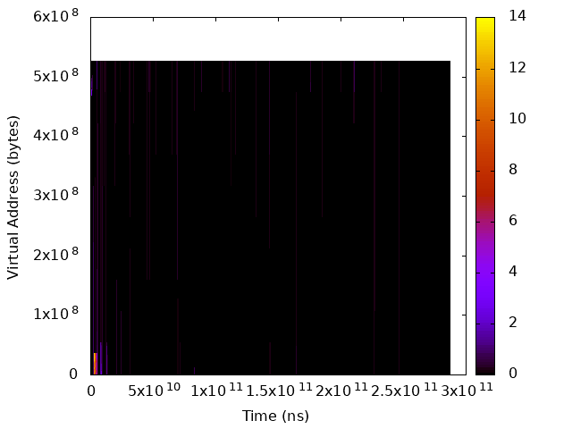
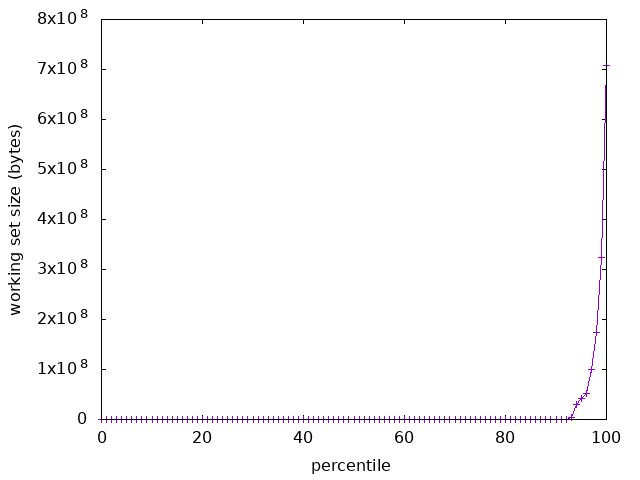
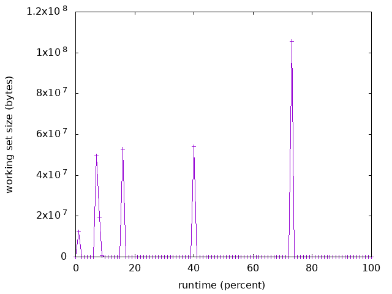
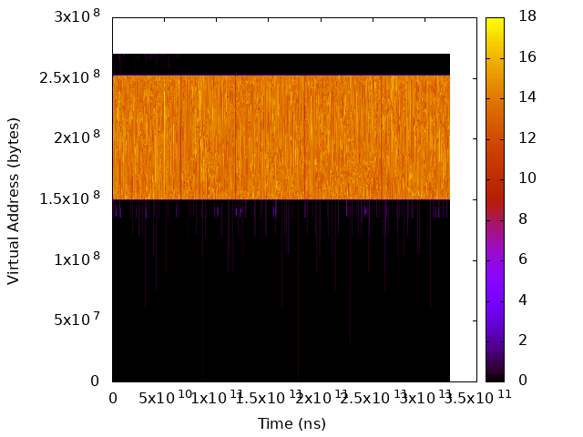
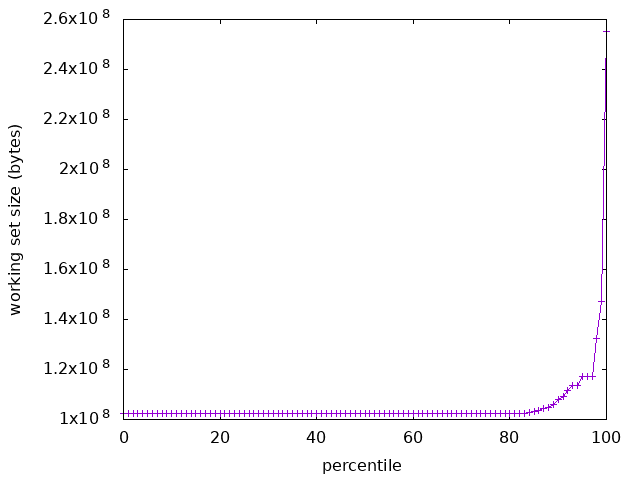
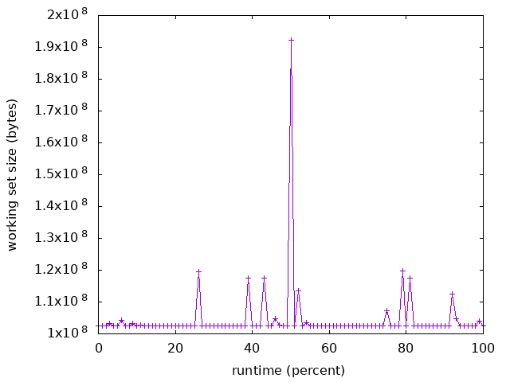

The Beginner’s Guide¶
This document is to help you estimating the amount of benefit that you could get from DAMON, and to let you know how you could maximize the improvement. You are assumed to already read Getting Started.
Check The Signs¶
DAMON cannot provide the same amount of benefit to every workload. Therefore you should first guess how much improvements you could get using DAMON. If some of the below conditions match your situation, you could consider the use of DAMON.
- Low IPC and High Cache Miss Ratios. Low IPC means most of the CPU time is spent waiting for the completion of time-consuming operations such as memory access, while high cache miss ratios mean the caches don’t help it well. DAMON is not for cache level optimization, but DRAM level. However, improving DRAM management will also help this case by reducing the memory operation latency.
- Memory Over-commitment and Unknown Users. If you are doing memory overcommitment and you cannot control every user of your system, a memory bank run could happen at any time. You can estimate when it will happen based on DAMON’s monitoring results and act earlier to avoid or deal better with the crisis.
- Frequent Memory Pressure. Frequent memory pressure means the wrong configuration or existence of memory hogs. DAMON will help you find the right configuration and/or the criminals.
- Heterogeneous Memory System. If your system is utilizing memory devices that placed between DRAM and traditional hard disks, such as non-volatile memory or fast SSDs, DAMON could help you utilizing the devices more efficiently.
Profile¶
If you found some positive signals, you could start by profiling your workloads
using DAMON. Find major workloads on your systems and analyze their data
access pattern to find something wrong or can be improved. The DAMON user
space tool (damo) will be enough for this.
We recommend you to start from working set size distribution check using damo
report wss. If the distribution is ununiform or quite different from what
you estimated, you could consider Memory Configuration optimization.
Then, review the overall access pattern in heatmap form using damo report
heats. If it shows a simple pattern consists of a small number of memory
regions having high contrast of access temperature, you could consider `Manual
Program Optimization`_.
If the access pattern is very frequently changing so that you cannot figure out what is the performance important region using your human eye, Automated DAMON-based Memory Operations might help the case owing to its machine-level microscope view.
You don’t need to take only one approach among the above plans, but you could use multiple of the above approaches to maximize the benefit. If you still want to absorb more benefits, you should develop Personalized DAMON Application for your special case.
Optimize¶
If the profiling result also says it’s worth trying some optimization, you could consider the below approaches. Note that some of the below approaches assume that your systems are configured with swap devices or other types of auxiliary memory so that you don’t need to accommodate the whole working set in the main memory. Most of the detailed optimization should be made on your concrete understanding of your swap and/or your auxiliary memory performance.
Memory Configuration¶
DRAM is highly performance critical but expensive and heavily consumes the power. However, knowing the real important working set size is hard and thus people usually equips unnecessarily large or too small DRAM. So many problems come from such wrong configurations.
Using the working set size distribution report provided by damo report wss,
you can know the real needs and make reasonable tradeoffs. For example,
roughly speaking, if you worry about only 95 percentile latency, you don’t need
to equip DRAM of a size larger than 95 percentile working set size. If you
were suffered from frequent memory pressure, you will also easily know how much
DRAM you should buy.
Let’s see a real example. Below are the heatmap and the working set size
distributions/changes of freqmine workload in PARSEC3 benchmark suite. The
working set size spikes up to 700 MiB, but keeps smaller than 100 MiB for more
than 95% of the time. Even though you give only 100 MiB of memory space to the
workload, it will work well for 95% of the time. Meanwhile, you can save the
600 MiB of memory space.

The access pattern in heatmap format. |

The distribution of working set size. |

The chronological changes of working set size. |
Program Modification¶
If the data access pattern heatmap plotted using damo report heats is quite
simple and clear, you could be able to know how the thing is going in the
workload, and how you could make optimize memory management.
For example, suppose that the workload has two big memory object but only one
object is frequently accessed while the other is only occasionally scanned.
Then, you could modify the program source code to invoke mlock() or
madvise() with WILLNEED system call for the hot object. Or, you could
use madvise() with MADV_COLD or MADV_PAGEOUT for the cold objects.
Using both together would be also worth trying.
A previous work [1] using the mlock() achieved up to 2.55x performance
speedup.
Let’s see another realistic example access pattern for this kind of optimizations. Below are the visualized access patterns of streamcluster workload in PARSEC3 benchmark suite. We can easily see a 100 MiB sized memory object is the hot object.

The access pattern in heatmap format. |

The distribution of working set size. |

The chronological changes of working set size. |
Automated DAMON-based Memory Operations¶
Though Manual Program Optimization works well in many cases and DAMON can help it, modifying the source code is not a good option in many cases. First of all, the source code could be too old or unavailable. And, many workloads will have complex data access patterns that even hard to distinguish hot memory objects and cold memory objects with the human eye. Finding the mapping from the visualized access pattern to the source code and injecting the hinting system calls inside the code will also be quite challenging.
By using DAMON-based operation schemes (DAMOS) via damo schemes, you will
be able to easily optimize your workload in such a case. Our example schemes
called ‘efficient THP’ and ‘proactive reclamation’ achieved significant speedup
and memory space saves against 25 realistic workloads [2], [3].
That said, note that you need careful tune of the schemes (e.g., target region size and age) and monitoring attributes for the successful use of this approach. Because the optimal values of the parameters will be dependent on each system and workload, misconfiguring the parameters could result in worse memory management.
For the tuning, you could measure the performance metrics such as IPC, TLB misses, and swap in/out events for varying parameters. Writing a program automating this optimal parameter could be an option.
Personalized DAMON Application¶
Below approaches will work well for many cases, but would not be able to squeeze the last benefit in some special cases because only very simple optimizations are available.
If this is the case, it might be the time to forget the comfortable use of the user space tool and dive into the debugfs interface (refer to Detailed Usages for the detail) of DAMON. Using the interface, you can control the DAMON more flexibly. Therefore, you can write your personalized DAMON application that controls the monitoring via the debugfs interface, analyzes the result, and apply complex optimizations itself. Using this, you will be able to make more creative and wise optimizations.
If you are kernel space programmer, writing kernel space DAMON applications using the API (refer to API Reference for more detail) would be also an option.
Reference Practices¶
Referencing previously done successful practices could help you getting the sense for this kind of optimizations. There is an academic paper [1] previously reported the visualized access pattern and `Manual Program Optimization`_ results for a number of realistic workloads. You can also get the visualized access pattern [4], [5], [6] and Automated DAMON-based Memory Operations results for other realistic workloads that collected with latest version of DAMON [2], [3].
| [1] | (1, 2) https://dl.acm.org/doi/10.1145/3366626.3368125 |
| [2] | (1, 2) https://damonitor.github.io/test/result/perf/latest/html/ |
| [3] | (1, 2) https://lore.kernel.org/linux-mm/20200512115343.27699-1-sjpark@amazon.com/ |
| [4] | https://damonitor.github.io/test/result/visual/latest/heatmap.1.html |
| [5] | https://damonitor.github.io/test/result/visual/latest/wss_sz.html |
| [6] | https://damonitor.github.io/test/result/visual/latest/wss_time.html |